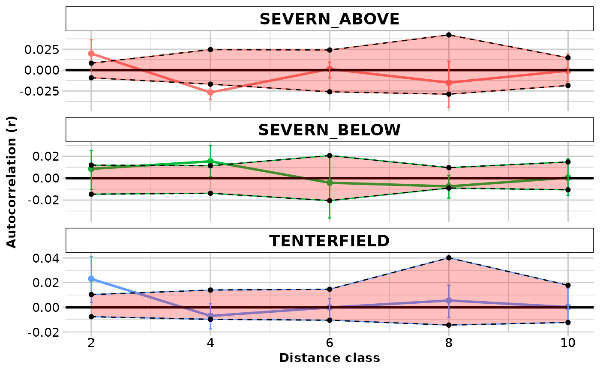
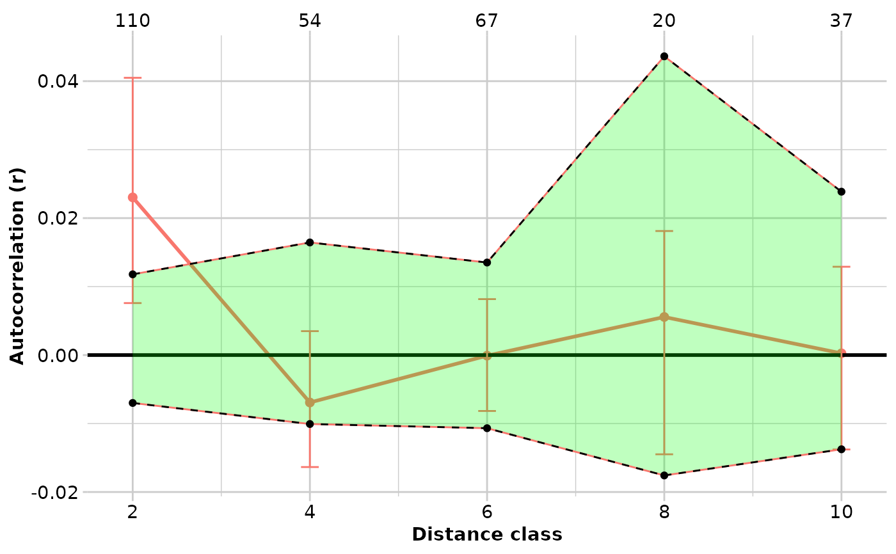

Spatial autocorrelation following Smouse and Peakall 1999
gl.spatial.autoCorr.RdGlobal spatial autocorrelation is a multivariate approach combining all loci into a single analysis. The autocorrelation coefficient "r" is calculated for each pair of individuals in each specified distance class. For more information see Smouse and Peakall 1999, Peakall et al. 2003 and Smouse et al. 2008.
Usage
gl.spatial.autoCorr(
x = NULL,
Dgeo = NULL,
Dgen = NULL,
coordinates = "latlon",
Dgen_method = "Euclidean",
Dgeo_trans = "Dgeo",
Dgen_trans = "Dgen",
bins = 5,
reps = 100,
plot.pops.together = FALSE,
permutation = TRUE,
bootstrap = TRUE,
plot_theme = NULL,
plot_colors_pop = NULL,
CI_color = "red",
plot.out = TRUE,
save2tmp = FALSE,
verbose = NULL
)Arguments
- x
Genlight object [default NULL].
- Dgeo
Geographic distance matrix if no genlight object is provided. This is typically an Euclidean distance but it can be any meaningful (geographical) distance metrics [default NULL].
- Dgen
Genetic distance matrix if no genlight object is provided [default NULL].
- coordinates
Can be either 'latlon', 'xy' or a two column data.frame with column names 'lat','lon', 'x', 'y') Coordinates are provided via
gl@other$latlon['latlon'] or viagl@other$xy['xy']. If latlon data will be projected to meters using Mercator system [google maps] or if xy then distance is directly calculated on the coordinates [default .- Dgen_method
Method to calculate genetic distances. See details [default "Euclidean"].
- Dgeo_trans
Transformation to be used on the geographic distances. See Dgen_trans [default "Dgeo"].
- Dgen_trans
You can provide a formula to transform the genetic distance. The transformation can be applied as a formula using Dgen as the variable to be transformed. For example:
Dgen_trans = 'Dgen/(1-Dgen)'. Any valid R expression can be used here [default 'Dgen', which is the identity function.]- bins
The number of bins for the distance classes (i.e.
length(bins) == 1)or a vectors with the break points. See details [default 5].- reps
The number to be used for permutation and bootstrap analyses [default 100].
- plot.pops.together
Plot all the populations in one plot. Confidence intervals from permutations are not shown [default FALSE].
- permutation
Whether permutation calculations for the null hypothesis of no spatial structure should be carried out [default TRUE].
- bootstrap
Whether bootstrap calculations to compute the 95% confidence intervals around r should be carried out [default TRUE].
- plot_theme
Theme for the plot. See details [default NULL].
- plot_colors_pop
A color palette for populations or a list with as many colors as there are populations in the dataset [default NULL].
- CI_color
Color for the shade of the 95% confidence intervals around the r estimates [default "red"].
- plot.out
Specify if plot is to be produced [default TRUE].
- save2tmp
If TRUE, saves any ggplots and listings to the session temporary directory (tempdir) [default FALSE].
- verbose
Verbosity: 0, silent or fatal errors; 1, begin and end; 2, progress log ; 3, progress and results summary; 5, full report [default NULL, unless specified using gl.set.verbosity].
Value
Returns a data frame with the following columns:
Bin The distance classes
N The number of pairwise comparisons within each distance class
r.uc The uncorrected autocorrelation coefficient
Correction the correction
r The corrected autocorrelation coefficient
L.r The corrected autocorrelation coefficient lower limit (if
bootstap = TRUE)U.r The corrected autocorrelation coefficient upper limit (if
bootstap = TRUE)L.r.null.uc The uncorrected lower limit for the null hypothesis of no spatial autocorrelation (if
permutation = TRUE)U.r.null.uc The uncorrected upper limit for the null hypothesis of no spatial autocorrelation (if
permutation = TRUE)L.r.null The corrected lower limit for the null hypothesis of no spatial autocorrelation (if
permutation = TRUE)U.r.null The corrected upper limit for the null hypothesis of no spatial autocorrelation (if
permutation = TRUE)p.one.tail The p value of the one tail statistical test
Details
This function executes a modified version
of spautocorr from the package PopGenReport. Differently
from PopGenReport, this function also computes the 95% confidence
intervals around the r via bootstraps, the 95
null hypothesis of no spatial structure and the one-tail test via permutation,
and the correction factor described by Peakall et al 2003.
The input can be i) a genlight object (which has to have the latlon slot
populated), ii) a pair of Dgeo and Dgen, which have to be either
matrix or dist objects, or iii) a list of the
matrix or dist objects if the
analysis needs to be carried out for multiple populations (in this case,
all the elements of the list have to be of the same class (i.e.
matrix or dist) and the population order in the two lists has
to be the same.
If the input is a genlight object, the function calculates the linear distance
for Dgeo and the relevant Dgen matrix (see Dgen_method)
for each population.
When the method selected is a genetic similarity matrix (e.g. "simple"
distance), the matrix is internally transformed with 1 - Dgen so that
positive values of autocorrelation coefficients indicates more related
individuals similarly as implemented in GenAlEx. If the user provide the
distance matrices, care must be taken in interpreting the results because
similarity matrix will generate negative values for closely related
individuals.
If max(Dgeo)>1000 (e.g. the geographic distances are in thousands of
metres), values are divided by 1000 (in the example before these would then
become km) to facilitate readability of the plots.
If bins is of length = 1 it is interpreted as the number of (even)
bins to use. In this case the starting point is always the minimum value in
the distance matrix, and the last is the maximum. If it is a numeric vector
of length>1, it is interpreted as the breaking points. In this case, the
first has to be the lowest value, and the last has to be the highest. There
are no internal checks for this and it is user responsibility to ensure that
distance classes are properly set up. If that is not the case, data that fall
outside the range provided will be dropped. The number of bins will be
length(bins) - 1.
The permutation constructs the 95% confidence intervals around the null hypothesis of no spatial structure (this is a two-tail test). The same data are also used to calculate the probability of the one-tail test (See references below for details).
Bootstrap calculations are skipped and NA is returned when the number
of possible combinations given the sample size of any given distance class is
< reps.
Methods available to calculate genetic distances for SNP data:
"propShared" using the function
gl.propShared."grm" using the function
gl.grm."Euclidean" using the function
gl.dist.ind."Simple" using the function
gl.dist.ind."Absolute" using the function
gl.dist.ind."Manhattan" using the function
gl.dist.ind.
Methods available to calculate genetic distances for SilicoDArT data:
"Euclidean" using the function
gl.dist.ind."Simple" using the function
gl.dist.ind."Jaccard" using the function
gl.dist.ind."Bray-Curtis" using the function
gl.dist.ind.
Plots and table are saved to the temporal directory (tempdir) and can be
accessed with the function gl.print.reports and listed with
the function gl.list.reports. Note that they can be accessed
only in the current R session because tempdir is cleared each time that the
R session is closed.
Examples of other themes that can be used can be consulted in
References
Smouse PE, Peakall R. 1999. Spatial autocorrelation analysis of individual multiallele and multilocus genetic structure. Heredity 82: 561-573.
Double, MC, et al. 2005. Dispersal, philopatry and infidelity: dissecting local genetic structure in superb fairy-wrens (Malurus cyaneus). Evolution 59, 625-635.
Peakall, R, et al. 2003. Spatial autocorrelation analysis offers new insights into gene flow in the Australian bush rat, Rattus fuscipes. Evolution 57, 1182-1195.
Smouse, PE, et al. 2008. A heterogeneity test for fine-scale genetic structure. Molecular Ecology 17, 3389-3400.
Gonzales, E, et al. 2010. The impact of landscape disturbance on spatial genetic structure in the Guanacaste tree, Enterolobium cyclocarpum (Fabaceae). Journal of Heredity 101, 133-143.
Beck, N, et al. 2008. Social constraint and an absence of sex-biased dispersal drive fine-scale genetic structure in white-winged choughs. Molecular Ecology 17, 4346-4358.
Author
Carlo Pacioni, Bernd Gruber & Luis Mijangos (Post to https://groups.google.com/d/forum/dartr)
Examples
res <- gl.spatial.autoCorr(platypus.gl, bins=seq(0,10000,2000))
#> Starting gl.spatial.autoCorr
#> Analysis performed on the genlight object.
#>

#> Coordinates used from: x@other$latlon (Mercator transformed)
#> Transformation of Dgeo: Dgeo
#> Genetic distance: Euclidean
#> Tranformation of Dgen: Dgen
#> $SEVERN_ABOVE
#> Bin N r.uc Correction r L.r U.r
#> 1 2000 76 -0.02564315 0.04545455 0.0198113993 0.002290148 0.03621402
#> 2 4000 32 -0.07220725 0.04545455 -0.0267527002 -0.037441763 -0.01582525
#> 3 6000 13 -0.04414587 0.04545455 0.0013086741 -0.008343794 0.01084732
#> 4 8000 8 -0.06046684 0.04545455 -0.0150122948 -0.038578562 0.01723696
#> 5 10000 23 -0.04622188 0.04545455 -0.0007673346 -0.019201476 0.01986073
#> L.r.null.uc U.r.null.uc L.r.null U.r.null p.one.tail
#> 1 -0.05351638 -0.034918433 -0.008061839 0.01053611 0.00
#> 2 -0.06563458 -0.030723872 -0.020180035 0.01473067 0.00
#> 3 -0.07130385 -0.013637072 -0.025849301 0.03181747 0.44
#> 4 -0.07835055 -0.003271596 -0.032896004 0.04218295 0.27
#> 5 -0.06267303 -0.021981440 -0.017218486 0.02347311 0.48
#>
#> $SEVERN_BELOW
#> Bin N r.uc Correction r L.r U.r
#> 1 2000 17 -0.05393927 0.0625 0.0085607267 -0.0079827211 0.030498532
#> 2 4000 24 -0.04707985 0.0625 0.0154201481 0.0004604286 0.024453753
#> 3 6000 9 -0.06664774 0.0625 -0.0041477406 -0.0380090007 0.015427131
#> 4 8000 30 -0.06997976 0.0625 -0.0074797574 -0.0206266636 0.001399378
#> 5 10000 21 -0.06198526 0.0625 0.0005147397 -0.0110007399 0.013641711
#> L.r.null.uc U.r.null.uc L.r.null U.r.null p.one.tail
#> 1 -0.07713323 -0.04510349 -0.01463323 0.017396507 0.20
#> 2 -0.07368829 -0.04929668 -0.01118829 0.013203317 0.02
#> 3 -0.08143503 -0.04254079 -0.01893503 0.019959205 0.38
#> 4 -0.07464759 -0.05299149 -0.01214759 0.009508514 0.13
#> 5 -0.07448326 -0.05122927 -0.01198326 0.011270726 0.49
#>
#> $TENTERFIELD
#> Bin N r.uc Correction r L.r U.r
#> 1 2000 110 -0.001971616 0.025 2.302838e-02 0.007917751 0.043182005
#> 2 4000 54 -0.031927379 0.025 -6.927379e-03 -0.016853874 0.002197339
#> 3 6000 67 -0.025089835 0.025 -8.983472e-05 -0.006980108 0.008835844
#> 4 8000 20 -0.019438357 0.025 5.561643e-03 -0.006744775 0.020210176
#> 5 10000 37 -0.024745610 0.025 2.543903e-04 -0.011796194 0.015883305
#> L.r.null.uc U.r.null.uc L.r.null U.r.null p.one.tail
#> 1 -0.03290148 -0.0126787484 -0.00790148 0.01232125 0.00
#> 2 -0.03555512 -0.0098093636 -0.01055512 0.01519064 0.10
#> 3 -0.03551155 -0.0132801000 -0.01051155 0.01171990 0.60
#> 4 -0.04114952 -0.0002440709 -0.01614952 0.02475593 0.28
#> 5 -0.03881503 -0.0020014607 -0.01381503 0.02299854 0.38
#>
#> Completed: gl.spatial.autoCorr
#>
# using one population, showing sample size
test <- gl.keep.pop(platypus.gl,pop.list = "TENTERFIELD")
#> Starting gl.keep.pop
#> Processing genlight object with SNP data
#> Warning: data include loci that are scored NA across all individuals.
#> Consider filtering using gl <- gl.filter.allna(gl)
#> Checking for presence of nominated populations
#> Retaining only populations TENTERFIELD
#> Warning: Resultant dataset may contain monomorphic loci
#> Locus metrics not recalculated
#> Completed: gl.keep.pop
#>
res <- gl.spatial.autoCorr(test, bins=seq(0,10000,2000),CI_color = "green")
#> Starting gl.spatial.autoCorr
#> Analysis performed on the genlight object.
#>
#> Scale for 'x' is already present. Adding another scale for 'x', which will
#> replace the existing scale.

#> Coordinates used from: x@other$latlon (Mercator transformed)
#> Transformation of Dgeo: Dgeo
#> Genetic distance: Euclidean
#> Tranformation of Dgen: Dgen
#> $TENTERFIELD
#> Bin N r.uc Correction r L.r U.r
#> 1 2000 110 -0.001971616 0.025 2.302838e-02 0.004403096 0.048040578
#> 2 4000 54 -0.031927379 0.025 -6.927379e-03 -0.015138844 0.002411906
#> 3 6000 67 -0.025089835 0.025 -8.983472e-05 -0.009001906 0.006664806
#> 4 8000 20 -0.019438357 0.025 5.561643e-03 -0.011411023 0.019464568
#> 5 10000 37 -0.024745610 0.025 2.543903e-04 -0.011548092 0.013346590
#> L.r.null.uc U.r.null.uc L.r.null U.r.null p.one.tail
#> 1 -0.03290248 -0.015564763 -0.00790248 0.009435237 0.00
#> 2 -0.03689996 -0.011313570 -0.01189996 0.013686430 0.18
#> 3 -0.03542981 -0.011870645 -0.01042981 0.013129355 0.45
#> 4 -0.04332901 0.010519261 -0.01832901 0.035519261 0.30
#> 5 -0.03609267 -0.005114249 -0.01109267 0.019885751 0.34
#>
#> Completed: gl.spatial.autoCorr
#>